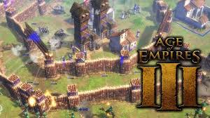
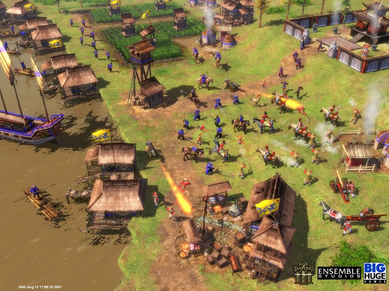

Al igual que los títulos anteriores de Age of Empires, en AoE III el jugador opta por una civilización y debe engrandecerla recolectando recursos, construyendo edificios, desarrollando tecnologías y destruyendo a los enemigos. De esta forma, el
jugador puede avanzar de edad en edad para mejorar su Economía, su tecnología, sus ejércitos, y crear nuevos y poderosos edificios. Además de estas típicas características de juego RTS, AoE III agrega una serie de novedades: la metrópoli o capital
del imperio de la nación europea que está colonizando el Nuevo Mundo, los héroes que poseen habilidades especiales para la lucha, o los tesoros repartidos por el mapa que al ser recogidos otorgan diversos premios.
Age of Empires 3
$ 200
Desripción
El juego está desarrollado en 3D y emplea el motor de juego Havok. En comparación con otras versiones de la serie de juegos de Age of Empires, hay una diferencia gráfica bastante amplia:9 los edificios y barcos pierden partes y se derrumban de forma
más realista, el agua refleja los objetos, se puede rotar y hacer zoom en la vista del juego, las unidades golpeadas por un cañonazo salen volando, las unidades impactadas por un arma sangran, los soldados que atacan a distancia recargan... Además,
el jugador puede firmar alianzas con los nativos americanos, que proporcionan unidades y tecnologías especiales.1 Los nativos se encuentran distribuidos de forma aleatoria en los mapas, y para aliarse con ellos, además de que no ocupan espacio en la
población; el héroe explorador debe construir un puesto comercial en sus poblados.